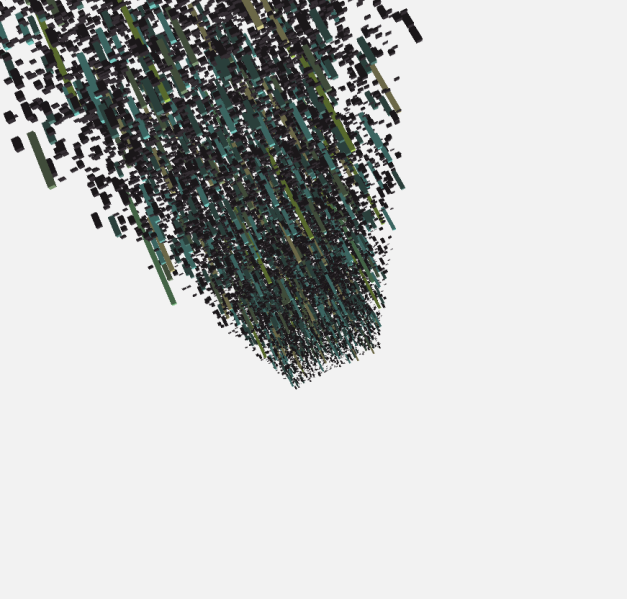
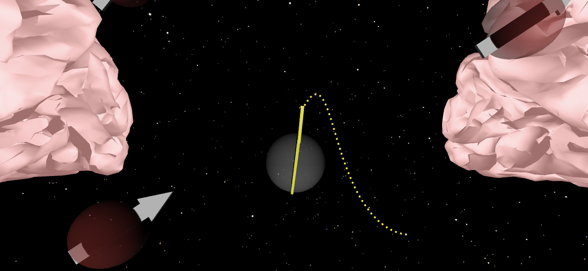

Lara
Floegel-Shetty
Software Engineer
Computer Science M.S. | UCSB | 1st Year Masters
Intro
Welcome! I'm Lara, a 1st year Masters student in Computer Science at the College of Engineering at University of California, Santa Barbara. As an aspiring Software Engineer with a love for Computer Graphics, I strive to further develop my skills in bridging the real and visual worlds.
Currently in graduate school, I want to further my research in Computer Graphics. My passion lies in the intersection between art, technology, and innovation, encompassing areas like video game development and software for movie production. During that time, I am intent on getting valuable hands on experience and look forward to working alongside your team in developing optimized and innovative CG software!
Experience
Disney Environment Software Engineer Intern ** Deferred to Summer 2021 **
Due to the pandemic, Disney has deferred their Summer 2020 Walt Disney Animation Studios interships to Summer 2021.
In lull of my internship, I have taught myself modeling through Maya, familiarized myself with OpenGL, CMake, and USD, and advanced my understanding of CG related procedural systems (i.e. CG primitives, instancing techniques, particle systems).
During my internship, I worked on software that instanced modeled geometry and procedurally generated primitives in conjunction with USD, Universal Scene Description. I worked on major redesigning and unifying of instancing systems to better optimize toolset that is used to build environments.
Computer Graphics Research Intern
I will be joining Computer Graphics researcher Lingqi Yan as a research intern in his lab at UCSB. The research will focus on rendering photo realistic graphics at real world complexity.
Software Developer
UCSB Gevirtz School of Education. Lead software developer in building the backend infrastructure of a SteamVR educational game modeled for children with difficulty learning in a traditional classroom environment. Designed in game graphics and user interface.
Software Engineer Intern
Interned at Stevens Neuroimaging and Informatics Institute. I developed an app visualizing the mathematical foundations of MRIs through 3D graphics. I transformed MRI data into 3D models of the neural pathways through offline rendering.
Virtual Reality Research Assistant
UCSB Gevirtz School of Education. Co-developed the front and backend of a Scratch inspired program designed to teach young children the fundamentals of programming in an immersive and responsive environment. I revamped the UI and UX to be more intuitive for the intended users.
Relevant Coursework
CS190i - Offline Rendering, CS180 - Computer Graphics, CS181 - Computer Vision, CS170 - Operating Systems, CS130H - Game Development and Design, MAT259 - Data Visualization, Physcis 1/2/3/3L - Basic Physics, Math 3B - Calculus, Math 4A - Linear Algrebra, Math 4B - Differential Equations, Math 6A - Vector Calculus, CS160 - Compiler Systems, CS138 - Automata and Formal Languages, ECE194T - Haptic Engineering, CS185 - Human Computer Interaction, CS184 - Android Development, CS130A - Data Structures and Algorithms, PSTAT120A - Probability and Statistics, PSTAT120B - Applied Statistics
Projects
Cook Torrance Implementation
C++, CMake
A VR program developed in Unity3D to provide an immersive alternative means of teaching literary skills to young children who have difficulties learning in a traditional classroom environment. The immersive program takes them on a narrative journey they create as they gradually build their literary tools.
Visualizing SPL Database
Java, Processing, MySQL
Using MySQL and Java, the figurine visualizes data taken from the Seattle Public Library database. The data is separated based on category of checked out items, represented by the colors of the cubes, and the popularity of those items based on the length of the cube. The resulting visualization is made up of tiers, with each tier representing one year from 2004 to 2016.
Literacy in VR
C#, SteamVR, Unity3D, Maya
A VR program developed in Unity3D to provide an immersive alternative means of teaching literary skills to young children who have difficulties learning in a traditional classroom environment. The immersive program takes them on a narrative journey they create as they gradually build their literary tools.
Operating System - KOS
C
Built an operating system implementing basic Linux calls including but not limited to fork, exec, and wait. Impemented with interrupt and eror handling and multiprocess memory managment for concurrent processing execution.
Mind of MRI
C#, Python, Blender
Developed at Stevens Neuroimaging and Informatics Institute. Intended for graduate use, the program details the complex mathematical and basic workings of MRI into simplifed 3D graphics. Allows students to directly see the cause and effects on protons when manipulating the data.
Computer Graphics
C++
Compiled Computer Graphics Program. Including but not limited to ray tracing, bezier curves, animation, shading, rasterization, and texture mapping.

Tastebuddy
Java, Firebase, Android Studio, Adobe XD
Android based app that allows users to create a currated shopping list based on ingredients at hand or recipes they have favorited. Worked on backend infrastruture and designed the overall UI and UX of the app.

Bow and Arrow Haptic Simulation
C++, Chai3D, OpenGL, Blender
A force feed back simulation using the Novint Falcon haptic device and Chai3D library. Using OpenGL, developed a simulation of a bow and arrow, modeling the physics and graphics of the string tension and the arrow trajectory. Modeled graphics in Blender.

Blockbased Coding
C#, Unity3D, Oculus, Blender
Co-developed the front and backend of a Scratch inspired blockbased coding game to introduce programming fundamentals to young children. I did a revamp of the in game graphics and interface to make the mechanics of the game intuitive for young children.